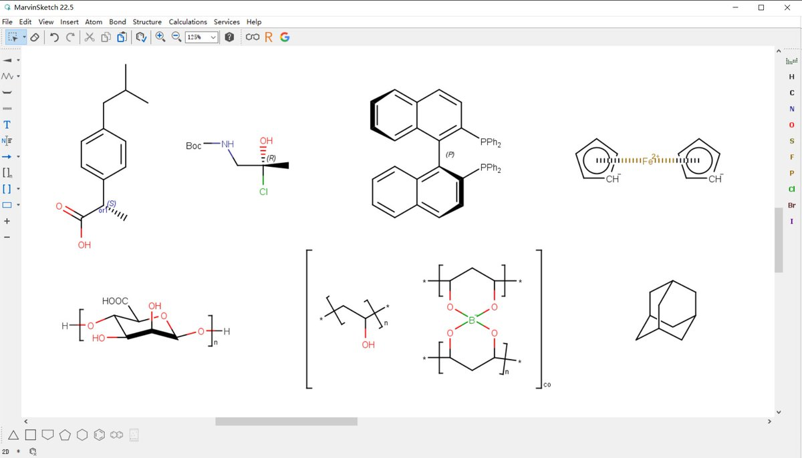

鼠尾草～🌿
@SalviaSWC
@d1yum1d freechemdraw呢👀

零℃可乐
@d1yum1d
MarvinSketch，看样子是可以画出 PsychonautWiki 那种样式的化学结构式
国内的 KingDraw、InDraw 试用了一下不能实现化学键上色
PsychonautWiki 在 Molecular structure (https://t.co/sdszfEGbms) 说是用的 ChemDraw——使用最为广泛的化学结构绘制工具 https://t.co/WjW2AVCUki